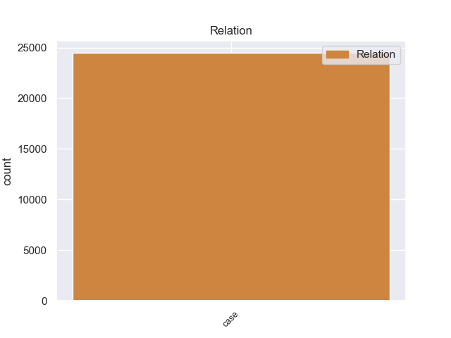
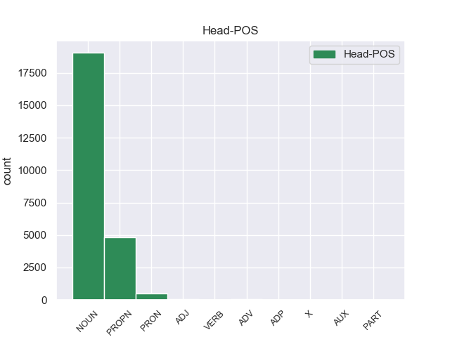
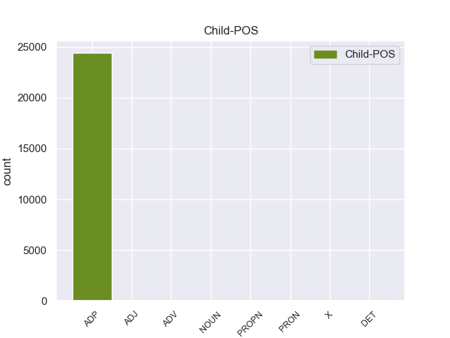

Distribution of features within this leaf



Agreement Rules sorted by frequency.
- When the dependent token is the case marking(case) of the head token, and the dependent token is ADP.
1 लैब _ _ _ _ 0 _ _ _
2 रिपोर्ट _ _ _ _ 0 _ _ _
3 आने _ _ _ _ 0 _ _ _
4 के _ _ _ _ 0 _ _ _
5 बाद _ _ _ _ 0 _ _ _
6 राज्य _ _ _ _ 0 _ _ _
7 पुलिस _ _ _ _ 0 _ _ _
8 ने _ _ _ _ 0 _ _ _
9 आज _ _ _ _ 0 _ _ _
10 एक _ _ _ _ 0 _ _ _
11 उच्चस्तरीय _ _ _ _ 0 _ _ _
12 बैठक _ _ _ _ 0 _ _ _
13 की _ _ _ _ 0 _ _ _
14 और _ _ _ _ 0 _ _ _
15 मामले _ _ _ _ 0 _ _ _
16 में _ _ _ _ 0 _ _ _
17 आगे _ _ _ _ 0 _ _ _
18 की _ _ _ _ 0 _ _ _
19 कार्रवाई कार्रवाई NOUN NN Case=Acc|Gender=Fem|Number=Sing|Person=3 0 _ _ _
20 की का ADP PSP AdpType=Post|Case=Nom|Gender=Fem|Number=Sing 19 case _ ChunkId=NP7|ChunkType=child|Translit=kī
21 रणनीति _ _ _ _ 0 _ _ _
22 तय _ _ _ _ 0 _ _ _
23 की _ _ _ _ 0 _ _ _
24 । _ _ _ _ 0 _ _ _
1 प्रधानमंत्री _ _ _ _ 0 _ _ _
2 मनमोहन _ _ _ _ 0 _ _ _
3 सिंह _ _ _ _ 0 _ _ _
4 ने _ _ _ _ 0 _ _ _
5 जाने जाने ADJ JJC Case=Nom|Gender=Masc|Number=Sing 7 case _ ChunkId=NP2|ChunkType=child|Translit=jāne
6 - _ _ _ _ 0 _ _ _
7 माने माने ADJ JJ Case=Acc|Gender=Masc|Number=Sing 0 _ _ _
8 रक्षा _ _ _ _ 0 _ _ _
9 विशेषज्ञ _ _ _ _ 0 _ _ _
10 के. _ _ _ _ 0 _ _ _
11 सुब्रमण्यम _ _ _ _ 0 _ _ _
12 की _ _ _ _ 0 _ _ _
13 अध्यक्षता _ _ _ _ 0 _ _ _
14 में _ _ _ _ 0 _ _ _
15 वैश्विक _ _ _ _ 0 _ _ _
16 सामरिक _ _ _ _ 0 _ _ _
17 घटनाओं _ _ _ _ 0 _ _ _
18 के _ _ _ _ 0 _ _ _
19 अध्ययन _ _ _ _ 0 _ _ _
20 के _ _ _ _ 0 _ _ _
21 लिए _ _ _ _ 0 _ _ _
22 एक _ _ _ _ 0 _ _ _
23 कार्यबल _ _ _ _ 0 _ _ _
24 का _ _ _ _ 0 _ _ _
25 गठन _ _ _ _ 0 _ _ _
26 किया _ _ _ _ 0 _ _ _
27 है _ _ _ _ 0 _ _ _
28 । _ _ _ _ 0 _ _ _
1 न्यूज _ _ _ _ 0 _ _ _
2 पेपर _ _ _ _ 0 _ _ _
3 ' _ _ _ _ 0 _ _ _
4 डेलीटेलीग्राफ _ _ _ _ 0 _ _ _
5 ' _ _ _ _ 0 _ _ _
6 ने _ _ _ _ 0 _ _ _
7 मंगलवार _ _ _ _ 0 _ _ _
8 को _ _ _ _ 0 _ _ _
9 वैटिकन _ _ _ _ 0 _ _ _
10 के _ _ _ _ 0 _ _ _
11 ' _ _ _ _ 0 _ _ _
12 विदेशी _ _ _ _ 0 _ _ _
13 मिशन _ _ _ _ 0 _ _ _
14 बिशपसंस्थान बिशपसंस्थान PROPN NNP Case=Acc|Gender=Masc|Number=Sing|Person=3 0 _ _ _
15 ' _ _ _ _ 0 _ _ _
16 के _ _ _ _ 0 _ _ _
17 फादर फादर ADV NST AdpType=Post|Case=Nom|Gender=Masc|Number=Sing|Person=3 14 case _ _
18 घेड़ो _ _ _ _ 0 _ _ _
19 के _ _ _ _ 0 _ _ _
20 हवाले _ _ _ _ 0 _ _ _
21 से _ _ _ _ 0 _ _ _
22 कहा _ _ _ _ 0 _ _ _
23 है _ _ _ _ 0 _ _ _
24 , _ _ _ _ 0 _ _ _
25 ' _ _ _ _ 0 _ _ _
26 ' _ _ _ _ 0 _ _ _
27 इस _ _ _ _ 0 _ _ _
28 चुनौती _ _ _ _ 0 _ _ _
29 को _ _ _ _ 0 _ _ _
30 हर _ _ _ _ 0 _ _ _
31 हाल _ _ _ _ 0 _ _ _
32 में _ _ _ _ 0 _ _ _
33 गंभीरता _ _ _ _ 0 _ _ _
34 से _ _ _ _ 0 _ _ _
35 लिया _ _ _ _ 0 _ _ _
36 जाना _ _ _ _ 0 _ _ _
37 चाहिए _ _ _ _ 0 _ _ _
38 ' _ _ _ _ 0 _ _ _
39 ' _ _ _ _ 0 _ _ _
40 : _ _ _ _ 0 _ _ _
1 इसीलिए _ _ _ _ 0 _ _ _
2 सभी _ _ _ _ 0 _ _ _
3 मुद्दों _ _ _ _ 0 _ _ _
4 को _ _ _ _ 0 _ _ _
5 रफा _ _ _ _ 0 _ _ _
6 - _ _ _ _ 0 _ _ _
7 दफा _ _ _ _ 0 _ _ _
8 करने _ _ _ _ 0 _ _ _
9 के _ _ _ _ 0 _ _ _
10 लिए _ _ _ _ 0 _ _ _
11 नक़वी _ _ _ _ 0 _ _ _
12 आडवाणी _ _ _ _ 0 _ _ _
13 से _ _ _ _ 0 _ _ _
14 आमने आमने NOUN NSTC AdpType=Post|Case=Nom|Gender=Masc|Number=Sing|Person=3 16 case _ AltTag=nst-NOUN|ChunkId=NP6|ChunkType=child|Translit=āmane
15 - _ _ _ _ 0 _ _ _
16 सामने सामने ADV NST AdpType=Post|Case=Nom|Gender=Masc|Number=Sing|Person=3 0 _ _ _
17 मिलना _ _ _ _ 0 _ _ _
18 चाहते _ _ _ _ 0 _ _ _
19 थे _ _ _ _ 0 _ _ _
20 । _ _ _ _ 0 _ _ _
1 न्यायपालिका _ _ _ _ 0 _ _ _
2 और _ _ _ _ 0 _ _ _
3 कार्यपालिका _ _ _ _ 0 _ _ _
4 के _ _ _ _ 0 _ _ _
5 बीच _ _ _ _ 0 _ _ _
6 समन्वय _ _ _ _ 0 _ _ _
7 पर _ _ _ _ 0 _ _ _
8 विशेष _ _ _ _ 0 _ _ _
9 जोर _ _ _ _ 0 _ _ _
10 देते _ _ _ _ 0 _ _ _
11 हुए _ _ _ _ 0 _ _ _
12 जस्टिस _ _ _ _ 0 _ _ _
13 लाहोटी _ _ _ _ 0 _ _ _
14 ने _ _ _ _ 0 _ _ _
15 कहा _ _ _ _ 0 _ _ _
16 कि _ _ _ _ 0 _ _ _
17 लोकतंत्र _ _ _ _ 0 _ _ _
18 के _ _ _ _ 0 _ _ _
19 तीनों _ _ _ _ 0 _ _ _
20 अंगों _ _ _ _ 0 _ _ _
21 को _ _ _ _ 0 _ _ _
22 अपनी _ _ _ _ 0 _ _ _
23 जिम्मेदारियों _ _ _ _ 0 _ _ _
24 का _ _ _ _ 0 _ _ _
25 निर्वहन _ _ _ _ 0 _ _ _
26 गौरवपूर्ण _ _ _ _ 0 _ _ _
27 तरीके _ _ _ _ 0 _ _ _
28 से _ _ _ _ 0 _ _ _
29 करना _ _ _ _ 0 _ _ _
30 चाहिए _ _ _ _ 0 _ _ _
31 और _ _ _ _ 0 _ _ _
32 समाज _ _ _ _ 0 _ _ _
33 के _ _ _ _ 0 _ _ _
34 सभी _ _ _ _ 0 _ _ _
35 वर्गो _ _ _ _ 0 _ _ _
36 के _ _ _ _ 0 _ _ _
37 हितों _ _ _ _ 0 _ _ _
38 के _ _ _ _ 0 _ _ _
39 लिए _ _ _ _ 0 _ _ _
40 एक एक PRON PRPC Case=Nom|Gender=Masc|Number=Sing|Person=3|PronType=Prs 42 case _ ChunkId=NP15|ChunkType=child|Tam=0|Translit=eka|Vib=0
41 - _ _ _ _ 0 _ _ _
42 दूसरे दूसरा PRON PRP Case=Acc|Gender=Masc|Number=Sing|Person=3|PronType=Prs 0 _ _ _
43 को _ _ _ _ 0 _ _ _
44 मजबूत _ _ _ _ 0 _ _ _
45 करना _ _ _ _ 0 _ _ _
46 चाहिए _ _ _ _ 0 _ _ _
47 । _ _ _ _ 0 _ _ _
1 इसके _ _ _ _ 0 _ _ _
2 पहले _ _ _ _ 0 _ _ _
3 भारत _ _ _ _ 0 _ _ _
4 आगमन _ _ _ _ 0 _ _ _
5 पर _ _ _ _ 0 _ _ _
6 प्रधानमंत्री _ _ _ _ 0 _ _ _
7 वन _ _ _ _ 0 _ _ _
8 ने _ _ _ _ 0 _ _ _
9 कहा _ _ _ _ 0 _ _ _
10 कि _ _ _ _ 0 _ _ _
11 उनके _ _ _ _ 0 _ _ _
12 भारत भारत PROPN NNP Case=Nom|Gender=Masc|Number=Sing|Person=3 13 case _ _
13 दौरे दौरा ADJ QO Case=Nom|Gender=Masc|Number=Sing|NumType=Ord 0 _ _ _
14 - _ _ _ _ 0 _ _ _
15 से _ _ _ _ 0 _ _ _
16 दोस्ती _ _ _ _ 0 _ _ _
17 को _ _ _ _ 0 _ _ _
18 बढ़ावा _ _ _ _ 0 _ _ _
19 मिलेगा _ _ _ _ 0 _ _ _
20 और _ _ _ _ 0 _ _ _
21 दोनों _ _ _ _ 0 _ _ _
22 देशों _ _ _ _ 0 _ _ _
23 के _ _ _ _ 0 _ _ _
24 बीच _ _ _ _ 0 _ _ _
25 सहयोग _ _ _ _ 0 _ _ _
26 का _ _ _ _ 0 _ _ _
27 दायरा _ _ _ _ 0 _ _ _
28 भी _ _ _ _ 0 _ _ _
29 बढ़ेगा _ _ _ _ 0 _ _ _
30 । _ _ _ _ 0 _ _ _
1 मिसौरी _ _ _ _ 0 _ _ _
2 के _ _ _ _ 0 _ _ _
3 गवर्नर _ _ _ _ 0 _ _ _
4 जे _ _ _ _ 0 _ _ _
5 . _ _ _ _ 0 _ _ _
6 निक्सन _ _ _ _ 0 _ _ _
7 ने _ _ _ _ 0 _ _ _
8 कहा _ _ _ _ 0 _ _ _
9 , _ _ _ _ 0 _ _ _
10 ' _ _ _ _ 0 _ _ _
11 ' _ _ _ _ 0 _ _ _
12 तूफान तूफान NOUN NN Case=Acc|Gender=Masc|Number=Sing|Person=3 0 _ _ _
13 इतना इतना X INTF Gender=Masc|Number=Sing 12 case _ _
14 भयावह _ _ _ _ 0 _ _ _
15 था _ _ _ _ 0 _ _ _
16 कि _ _ _ _ 0 _ _ _
17 सायरन _ _ _ _ 0 _ _ _
18 की _ _ _ _ 0 _ _ _
19 आवाज _ _ _ _ 0 _ _ _
20 भी _ _ _ _ 0 _ _ _
21 नहीं _ _ _ _ 0 _ _ _
22 सुनाई _ _ _ _ 0 _ _ _
23 दे _ _ _ _ 0 _ _ _
24 रही _ _ _ _ 0 _ _ _
25 थी _ _ _ _ 0 _ _ _
26 । _ _ _ _ 0 _ _ _
Disagree Examples:
1 मिस्र _ _ _ _ 0 _ _ _
2 में _ _ _ _ 0 _ _ _
3 प्रेजिडेंट _ _ _ _ 0 _ _ _
4 हुस्नीमुबारक हुस्नीमुबारक NOUN NN Case=Acc|Gender=Masc|Number=Sing|Person=3 0 _ _ _
5 की का ADP PSP AdpType=Post|Case=Acc|Gender=Fem|Number=Sing 4 case _ _
6 सरकार _ _ _ _ 0 _ _ _
7 के _ _ _ _ 0 _ _ _
8 खिलाफ _ _ _ _ 0 _ _ _
9 प्रदर्शन _ _ _ _ 0 _ _ _
10 कर _ _ _ _ 0 _ _ _
11 रहे _ _ _ _ 0 _ _ _
12 लोगों _ _ _ _ 0 _ _ _
13 ने _ _ _ _ 0 _ _ _
14 मौजूदा _ _ _ _ 0 _ _ _
15 विद्रोह _ _ _ _ 0 _ _ _
16 के _ _ _ _ 0 _ _ _
17 दौरान _ _ _ _ 0 _ _ _
18 सूचनाओं _ _ _ _ 0 _ _ _
19 के _ _ _ _ 0 _ _ _
20 आदान _ _ _ _ 0 _ _ _
21 - _ _ _ _ 0 _ _ _
22 प्रदान _ _ _ _ 0 _ _ _
23 के _ _ _ _ 0 _ _ _
24 लिए _ _ _ _ 0 _ _ _
25 अपना _ _ _ _ 0 _ _ _
26 न्यूज _ _ _ _ 0 _ _ _
27 पेपर _ _ _ _ 0 _ _ _
28 शुरू _ _ _ _ 0 _ _ _
29 किया _ _ _ _ 0 _ _ _
30 है _ _ _ _ 0 _ _ _
31 । _ _ _ _ 0 _ _ _
1 स्पष्ट _ _ _ _ 0 _ _ _
2 है _ _ _ _ 0 _ _ _
3 कि _ _ _ _ 0 _ _ _
4 तत्कालीन _ _ _ _ 0 _ _ _
5 समाज _ _ _ _ 0 _ _ _
6 में _ _ _ _ 0 _ _ _
7 कर्म _ _ _ _ 0 _ _ _
8 का _ _ _ _ 0 _ _ _
9 महत्व _ _ _ _ 0 _ _ _
10 था _ _ _ _ 0 _ _ _
11 , _ _ _ _ 0 _ _ _
12 जन्म जन्म NOUN NN Case=Acc|Gender=Fem|Number=Sing|Person=3 0 _ _ _
13 का का ADP PSP AdpType=Post|Case=Nom|Gender=Masc|Number=Sing 12 case _ _
14 नहीं _ _ _ _ 0 _ _ _
15 . _ _ _ _ 0 _ _ _
16 भाषा _ _ _ _ 0 _ _ _
17 - _ _ _ _ 0 _ _ _
18 शिक्षण _ _ _ _ 0 _ _ _
19 : _ _ _ _ 0 _ _ _
1 तापमान _ _ _ _ 0 _ _ _
2 में _ _ _ _ 0 _ _ _
3 बढ़ोतरी बढ़ोतरी NOUN NN Case=Acc|Gender=Fem|Number=Sing|Person=3 0 _ _ _
4 का का ADP PSP AdpType=Post|Case=Nom|Gender=Masc|Number=Sing 3 case _ _
5 यह _ _ _ _ 0 _ _ _
6 सिलसिला _ _ _ _ 0 _ _ _
7 आने _ _ _ _ 0 _ _ _
8 वाले _ _ _ _ 0 _ _ _
9 दिनों _ _ _ _ 0 _ _ _
10 भी _ _ _ _ 0 _ _ _
11 जारी _ _ _ _ 0 _ _ _
12 रहेगा _ _ _ _ 0 _ _ _
13 । _ _ _ _ 0 _ _ _
1 इसबीच _ _ _ _ 0 _ _ _
2 , _ _ _ _ 0 _ _ _
3 पुलिस _ _ _ _ 0 _ _ _
4 ने _ _ _ _ 0 _ _ _
5 खुफिया _ _ _ _ 0 _ _ _
6 सूचना सूचना NOUN NN Case=Acc|Gender=Fem|Number=Sing|Person=3 0 _ _ _
7 के का ADP PSP AdpType=Post|Case=Acc|Gender=Masc|Number=Sing 6 case _ _
8 आधार _ _ _ _ 0 _ _ _
9 पर _ _ _ _ 0 _ _ _
10 कार्रवाई _ _ _ _ 0 _ _ _
11 करते _ _ _ _ 0 _ _ _
12 हुए _ _ _ _ 0 _ _ _
13 बुरैलगांव _ _ _ _ 0 _ _ _
14 के _ _ _ _ 0 _ _ _
15 एक _ _ _ _ 0 _ _ _
16 दुकानदार _ _ _ _ 0 _ _ _
17 को _ _ _ _ 0 _ _ _
18 टिकटों _ _ _ _ 0 _ _ _
19 की _ _ _ _ 0 _ _ _
20 कालाबाजारी _ _ _ _ 0 _ _ _
21 करते _ _ _ _ 0 _ _ _
22 हुए _ _ _ _ 0 _ _ _
23 गिरफ्तारकर _ _ _ _ 0 _ _ _
24 लिया _ _ _ _ 0 _ _ _
25 । _ _ _ _ 0 _ _ _
1 इसबीच _ _ _ _ 0 _ _ _
2 , _ _ _ _ 0 _ _ _
3 पुलिस _ _ _ _ 0 _ _ _
4 ने _ _ _ _ 0 _ _ _
5 खुफिया _ _ _ _ 0 _ _ _
6 सूचना _ _ _ _ 0 _ _ _
7 के _ _ _ _ 0 _ _ _
8 आधार _ _ _ _ 0 _ _ _
9 पर _ _ _ _ 0 _ _ _
10 कार्रवाई _ _ _ _ 0 _ _ _
11 करते _ _ _ _ 0 _ _ _
12 हुए _ _ _ _ 0 _ _ _
13 बुरैलगांव _ _ _ _ 0 _ _ _
14 के _ _ _ _ 0 _ _ _
15 एक _ _ _ _ 0 _ _ _
16 दुकानदार _ _ _ _ 0 _ _ _
17 को _ _ _ _ 0 _ _ _
18 टिकटों टिकट NOUN NN Case=Acc|Gender=Masc|Number=Plur|Person=3 0 _ _ _
19 की का ADP PSP AdpType=Post|Case=Nom|Gender=Fem|Number=Sing 18 case _ _
20 कालाबाजारी _ _ _ _ 0 _ _ _
21 करते _ _ _ _ 0 _ _ _
22 हुए _ _ _ _ 0 _ _ _
23 गिरफ्तारकर _ _ _ _ 0 _ _ _
24 लिया _ _ _ _ 0 _ _ _
25 । _ _ _ _ 0 _ _ _